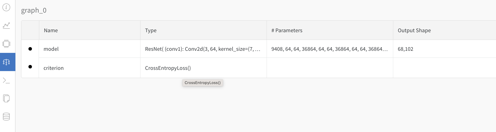
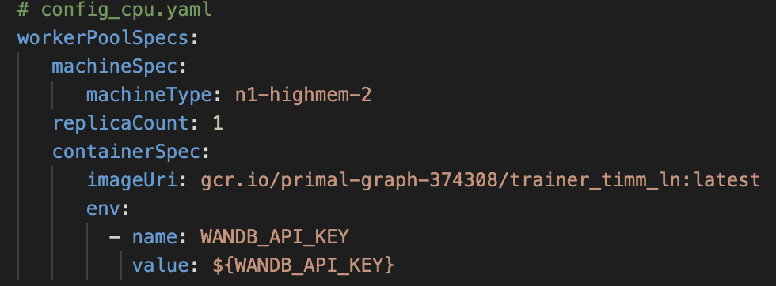
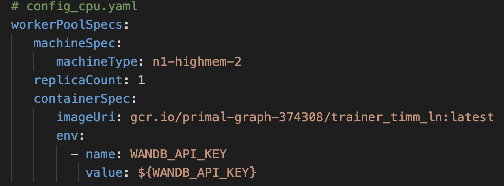
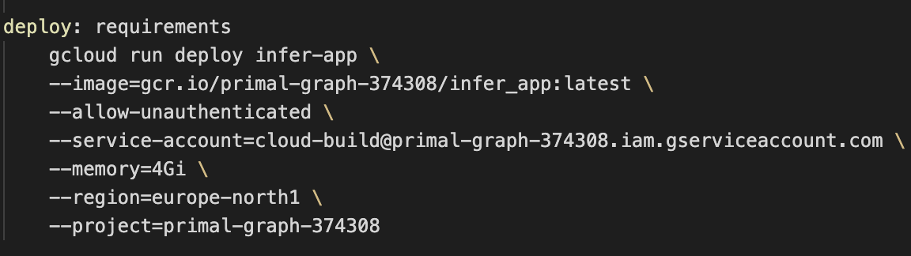
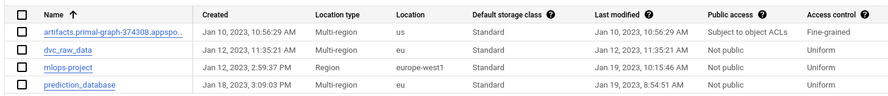
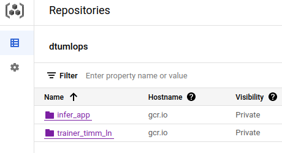
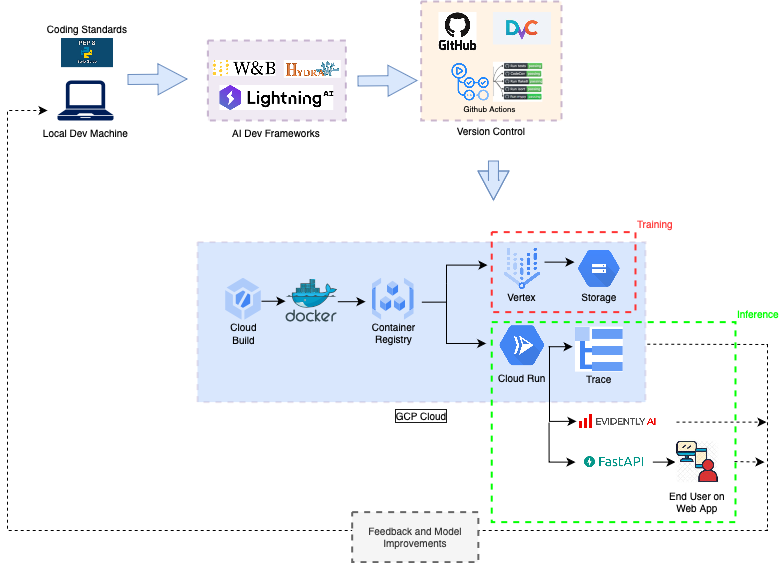

{kind=link}
 As seen in the above image, we have tracked metrices like the train and validation loss and accuracy for the model over various runs. We can see the training loss decreasing gradually and corresponding increase in the accuracy.
As seen in the above image, we have tracked metrices like the train and validation loss and accuracy for the model over various runs. We can see the training loss decreasing gradually and corresponding increase in the accuracy.This is the report template for the exam. Please only remove the text formatted as with three dashes in front and behind like:
--- question 1 fill here ---
where you instead should add your answers. Any other changes may have unwanted consequences when your report is auto
generated in the end of the course. For questions where you are asked to include images, start by adding the image to
the figures subfolder (please only use .png, .jpg or .jpeg) and then add the following code in your answer:
markdown

In addition to this markdown file, we also provide the report.py script that provides two utility functions:
Running:
bash
python report.py html
will generate an .html page of your report. After deadline for answering this template, we will autoscrape
everything in this reports folder and then use this utility to generate an .html page that will be your serve
as your final handin.
Running
bash
python report.py check
will check your answers in this template against the constrains listed for each question e.g. is your answer too short, too long, have you included an image when asked to.
For both functions to work it is important that you do not rename anything. The script have two dependencies that can
be installed with pip install click markdown.
Enter the group number you signed up on
Answer:
26
Enter the study number for each member in the group
Example:
sXXXXXX, sXXXXXX, sXXXXXX
Answer:
s163928, s212919, s120356
What framework did you choose to work with and did it help you complete the project?
Answer length: 100-200 words.
Example: We used the third-party framework ... in our project. We used functionality ... and functionality ... from the package to do ... and ... in our project.
Answer:
The framework we chose to work with was Pytorch Image Models (TIMM). The only functionality we ended up using from the framework was the pre-trained models. We started out by testing a few different versions, and ended up moving forward with the ResNet model with 18 layers. The ability to load a pre-trained model, that returned accurate prediction within few epochs of fine-tuning, made the project start out very quickly. In a more model oriented project, we would very likely have tested out many more models, and in this case, the framework would also have been excellent for quick model type comparison.
In the following section we are interested in learning more about you local development environment.
Explain how you managed dependencies in your project? Explain the process a new team member would have to go through to get an exact copy of your environment.
Answer length: 100-200 words
Example: We used ... for managing our dependencies. The list of dependencies was auto-generated using ... . To get a complete copy of our development enviroment, one would have to run the following commands
Answer:
We used a simple file called requirements in order to keep track of dependencies. Every time someone needed to do pip install something, they added it to the requirements file as the first thing. In order for someone else to get a complete copy of our development environment they would first have to create a virtual environment with either pipenv or Conda, where after they can run the following make command:
bash
$ make requirements
Most make commands are setup to always run make requirements before the actual command which makes sure that everything is always installed before running a command.
If we ever forgot to add something to a requirements file, we could also use the package pipreqs to auto generate the requirement file however it was never needed.
We expect that you initialized your project using the cookiecutter template. Explain the overall structure of your code. Did you fill out every folder or only a subset?
Answer length: 100-200 words
Example: From the cookiecutter template we have filled out the ... , ... and ... folder. We have removed the ... folder because we did not use any ... in our project. We have added an ... folder that contains ... for running our experiments. Answer:
From the cookiecutter template we are using the following folders * data * docs * models * reports * src
The data and models folder are empty on the github repo, but whenever we do DVC pull or get the data from GCP cloud storage it goes it the data folder. The model from vertex AI is placed in the models folder. In docs we have added a deploy function to the make file and all source code can be found in src.
We have removed the following folders because we dud not have a use for it in our project. * Notebooks * References
In addition we added: * tests * .github - for unit testing and github workflow files * wandb - for wandb * configs - for experiment configuration
Did you implement any rules for code quality and format? Additionally, explain with your own words why these concepts matters in larger projects.
Answer length: 50-100 words.
Answer:
We implemented the pre-commit package and setup checks for trailing whitespace, end-of-file lines, yaml files, large files, flake8, isort and black. What this means is that all off these checks are being run when trying to commit changes. This is important because it not only makes the code easier to read but also to maintain. Especially checks for unused- and over complex lines of code help making it easy to maintain. Keeping a consistent style throughout the code base also makes collaboration easier in the sense that everyone is not writing code in their own unique style.
In the following section we are interested in how version control was used in your project during development to corporate and increase the quality of your code.
How many tests did you implement?
Answer:
We implemented 11 tests in total. 6 of the test were for testing that the data was being loaded and processed correctly. The last 5 test were used to test that the model was setup corretly in order for the lightning framework to do the training of the model correctly.
What is the total code coverage (in percentage) of your code? If you code had an code coverage of 100% (or close to), would you still trust it to be error free? Explain you reasoning.
Answer length: 100-200 words.
Example: The total code coverage of code is X%, which includes all our source code. We are far from 100% coverage of our code and even if we were then...*
Answer:
The total code coverage of the unit test of our source code is 72%. The main reason for not reaching 100% is because our training script is wrapped as a function and we are not testing that directly. Instead we are testing all the individual functions within, ie. the model, training function etc. So we are confident that the results are correct, but we could not be completely sure the script would run without errors, if you did errornous changes to the training script. But these errors would easily be caught as soon as the training script would be used. If there was more time, we should have recoded the training script to make it testable.
Did you workflow include using branches and pull requests? If yes, explain how. If not, explain how branches and pull request can help improve version control.
Answer length: 100-200 words.
Example: We made use of both branches and PRs in our project. In our group, each member had an branch that they worked on in addition to the main branch. To merge code we ...
Answer:
We made use of both branches and PRs in our project. When a feature need to be created e.g. setting up unit test a branch was made with that name. The feature would then be developed by one or more people from the group, where a PR would be made. The PR would require 1 reviewer and the unit test workflow to pass before allowing a merge request to be made into the main branch. By using this structure we avoided merge conflicts and made sure that all our test were successful and thereby not pushing broken code to the main branch.
Did you use DVC for managing data in your project? If yes, then how did it improve your project to have version control of your data. If no, explain a case where it would be beneficial to have version control of your data.
Answer length: 100-200 words.
Example: We did make use of DVC in the following way: ... . In the end it helped us in ... for controlling ... part of our pipeline
Answer:
We used DVC for version control of our raw data. It was stored in a GCP storage bucket and would then be pulled when needed for training. Since we didn’t change the raw data during the project and we further didn’t save any processed version of it, it didn’t improve the project in any practical sense. If we had more time we would have done version control of the trained model, since the model was replaced for every re-training. Furthermore, we probably should have done different kind of data processing for improving the model training, and in this case, it would have been essential to have version control with the different methods.
Discuss you continues integration setup. What kind of CI are you running (unittesting, linting, etc.)? Do you test multiple operating systems, python version etc. Do you make use of caching? Feel free to insert a link to one of your github actions workflow.
Answer length: 200-300 words.
Example: We have organized our CI into 3 separate files: one for doing ..., one for running ... testing and one for running ... . In particular for our ..., we used ... .An example of a triggered workflow can be seen here:
Answer:
We have organized our CI into only one file which is for unit testing. However at the beginning of the project we were planing to have 3 files. One for linting (flake8, black, etc.) , one for unit test and one for create a docker image. We scraped having a linting workflow file because we setup a precommit hook would not allow a commit to made without having the standard of flake8 and styling of black.
Before we began working with GCP we setup a workflow file for creating a docker image, however when we started moving the project over to GCP, we realized that it would be easier to create the image in GCP instead of Github actions.
For now we have decided only to run the unit test on ubuntu-latest, 12.x with python version 3.8. The workflow file can easily be expanded to run on multiple OS such as macos-latest, 12.x and windows-latest, 12.x. An example of how to add it can be seen here:
py
strategy:
matrix:
os: [ubuntu-latest, macos-latest, windows-latest]
The same goes for running different version of python such as 3.9. However if this was a bigger project, it would be nice to have these test running as well. An example of a triggered workflow can be seen here: Web-Link
In the following section we are interested in learning more about the experimental setup for running your code and especially the reproducibility of your experiments.
How did you configure experiments? Did you make use of config files? Explain with coding examples of how you would run a experiment.
Answer length: 50-100 words.
Example: We used a simple argparser, that worked in the following way: python my_script.py --lr 1e-3 --batch_size 25
Answer:
We have used hydra, omegaconf and wandb to configure and log the experiments. With hydra and omegaconf we have setup a configs directory that contains the sub-configuration files for various components of the code like model, optimizer, training, wandb etc. We have specified a default configuration that is activated when we run the code normally (eg. the training code). To run a certain experiment we can specify it as follows after defining the experiment config file in experiments.
Running with default config:
bash
$ python src/models/train_LN_model.py
Hydra multirun on different experimental configurations as defined in experiment/:
bash
$ python src/models/train_LN_model.py -m experiment=expt001,expt002
An experiment configuration would look similar to,
yaml
training:
task: 'multiclass'
model_output_name: 'model'
model_dir_name: 'models'
batch_size: 64
limit_train_batches: 0.20 # Limit to 20% of total size.
max_epochs: 5
optimizer: 'adam'
loss: 'CrossEntropy'
callbacks:
EarlyStopping:
monitor: 'val_loss'
ModelCheckpoint:
monitor: 'val_loss'
logging:
logger: 'wandb_logger'
log_every_n_steps: 1
Additional configuration can be specified for model and optimizer separately as well.
Reproducibility of experiments are important. Related to the last question, how did you secure that no information is lost when running experiments and that your experiments are reproducible?
Answer length: 100-200 words.
Example: We made use of config files. Whenever an experiment is run the following happens: ... . To reproduce an experiment one would have to do ...
Answer:
We will rely and make use of the config files for the different experiemnts. The experiemnt configuration file allows us to specify the specific config for the run as described above. Every time the experiment is run, the configuration and the results are logged (the model weights for instance) with the timestamp and name of the run. We can now run a reproducibilty test (to see if the weights match for instance) to see if we can reproduce the results. The alternative to having a configuration file would be e.g. a word or excel file were you could log all the information. You would then have to manually input it and it would be really hard to work with.
Upload 1 to 3 screenshots that show the experiments that you have done in W&B (or another experiment tracking service of your choice). This may include loss graphs, logged images, hyperparameter sweeps etc. You can take inspiration from this figure. Explain what metrics you are tracking and why they are important.
Answer length: 200-300 words + 1 to 3 screenshots.
Example: As seen in the first image when have tracked ... and ... which both inform us about ... in our experiments. As seen in the second image we are also tracking ... and ...
Answer:
As seen in the above image, we have tracked metrices like the train and validation loss and accuracy for the model over various runs. We can see the training loss decreasing gradually and corresponding increase in the accuracy.
 As seen in this image we have also tracked model hyperparameters for the run. These are logged during the training process. WanDB also allows us to save the model checkpoints during the run and thereby having versions of the model in the model registry.
An attempt was also made to create a table illustrating the predictions during a validation run. However this was not succesfull, as we tried to implement a callback in the lightning module with the on_validation_end_callback which would plot the tables; but there was trouble passing the wandb logger to the lightning callback.
Tracking the loss is important as it allows us to understand and evaluate the training performance. If our loss does not show any variation with epochs, we must try to understand the reasons for the same utilising our domain knowledge of the data and also based on our understanding of the model architecture. Following this we can tune the paramters, run multiple expirements, perform hyperparamter sweeps and finally select the best model.
Docker is an important tool for creating containerized applications. Explain how you used docker in your experiments? Include how you would run your docker images and include a link to one of your docker files.
Answer length: 100-200 words.
Example: For our project we developed several images: one for training, inference and deployment. For example to run the training docker image:
docker run trainer:latest lr=1e-3 batch_size=64. Link to docker file:Answer:
For our project we have built basically two types of containers: 1. to train the data on our model and save it to a GCP bucket 2. to deploy the inference app that gives the result whenever a user uploads an image
The containers can be built locally or using cloudbuild. We have relied on both methods and pushed the images to GCP Container Registry. Trainer-Image and Inference-Image can be found here.
Now,
- the training container is used to create a vertex-job as follows,
 
- the inference container is deployed to cloud run by the following command:

- the inference container is deployed to cloud run by the following command: make deploy which runs the below,

When running into bugs while trying to run your experiments, how did you perform debugging? Additionally, did you try to profile your code or do you think it is already perfect?
Answer length: 100-200 words.
Example: Debugging method was dependent on group member. Some just used ... and others used ... . We did a single profiling run of our main code at some point that showed ...
Answer:
In this project we are working with many different python packages and we have to learn how to work with each and everyone. In this process bugs will of cause appear, however it is very different how these should be treated. Common ways for all team members to perform debugging is to first of all read the error or warning message. If it is not clear from this message what the mistake was, a google search is made. It is very common that other people have had similar problems especially when being new to a package or framework. If it is still not clear how the bug should be fixed, the documentation for specif imports an be looked up and gone through. Maybe a package is deprecated or the guide that you are following is multiple years old and the packages have changed a bit.
In the following section we would like to know more about your experience when developing in the cloud.
List all the GCP services that you made use of in your project and shortly explain what each service does?
Answer length: 50-200 words.
Example: We used the following two services: Engine and Bucket. Engine is used for... and Bucket is used for...
Answer:
We used the following services:
The backbone of GCP is the Compute engine. Explained how you made use of this service and what type of VMs you used?
Answer length: 50-100 words.
Example: We used the compute engine to run our ... . We used instances with the following hardware: ... and we started the using a custom container: ...
Answer:
Our project didn't require the use of GCP Compute Engine directly. We instead relied on managed and serverless services like Vertex-AI and Cloud Run instead. We used Vertex for model training in which we would specify the compute configuration on the fly. Our inference app was hosted on Cloud Run. In both cases, we created container images for our code viz, training code and inference app respectively. These were then build and pushed to the container registry using cloudbuild (or locally). The training container image was used to create a vertex custom job with
yaml
machineSpec:
machineType: n1-highmem-2
and the inference container was deployed in the Cloud Run.
Insert 1-2 images of your GCP bucket, such that we can see what data you have stored in it. You can take inspiration from this figure.
Answer:


Upload one image of your GCP container registry, such that we can see the different images that you have stored. You can take inspiration from this figure.
Answer:

Upload one image of your GCP cloud build history, so we can see the history of the images that have been build in your project. You can take inspiration from this figure.
Answer:

Did you manage to deploy your model, either in locally or cloud? If not, describe why. If yes, describe how and preferably how you invoke your deployed service?
Answer length: 100-200 words.
Example: For deployment we wrapped our model into application using ... . We first tried locally serving the model, which worked. Afterwards we deployed it in the cloud, using ... . To invoke the service an user would call
curl -X POST -F "file=@file.json"<weburl>Answer:
The very first test we for deploying the local, was done by saving a checkpoint locally, setting up FastAPI and a /predict/ endpoint that used the model checkpoint to make a prediction on an incoming image. After a few tries it succeed and we wrapped the model checkpoint and FastAPI into a docker container which was build using a github action workflow file. We got that up and running as well and moved on to using GCP. First of the model was trained with Vertex AI and saved in Cloud Storage (Bucket). A docker image was created and added to the GCP container registry. From here a make command was created to deploy the image on Cloud Run while fetching the trained model from Cloud Storage. To invoke the predict method of the API one can go to the url of the public endpoint or make a curl command as the following;
bash
curl -X 'POST' \
$(shell gcloud run services describe infer-app \
--platform managed \
--region europe-north1 \
--format 'value(status.url)')/prediction/ \
-H 'accept: application/json' \
-H 'Content-Type: multipart/form-data' \
-F 'data=@${IMAGE};type=image/jpeg'
Did you manage to implement monitoring of your deployed model? If yes, explain how it works. If not, explain how monitoring would help the longevity of your application.
Answer length: 100-200 words.
Example: We did not manage to implement monitoring. We would like to have monitoring implemented such that over time we could measure ... and ... that would inform us about this ... behaviour of our application.
Answer:
We did manage to implement monitoring both data drifting and system monitoring.
For datadrifting we used the evidently AI framework. The project was image classification, so in order to capture features of the input images, we used the CLIP model from open ai. First the abstract features for all training data was extracted as a reference database, and then we set up prediction and feature logging in the inference api. The final datadrift monitoring was then implemented in the inference api with evidently.
For system monitoring we went to the monitoring service in GCP and setup alerts for “Request Count” and “Billable Instance Time” to make sure that the our api was not being spammed with requests and thereby generating a very high cost.
Further more we tried to implement OpenTelemetry to monitor time spend when per request our api was receiving. We got it working locally so that it sends data to the GCP Trace service, however we did not manage to make it report to the Trace service when running in Cloud Run.
How many credits did you end up using during the project and what service was most expensive?
Answer length: 25-100 words.
Example: Group member 1 used ..., Group member 2 used ..., in total ... credits was spend during development. The service costing the most was ... due to ...
Answer:
In total 28.5 credits were spend during development. The service costing the most for exercises only were th compute enigine. Including the project Cloud Storage used 19 credits alone. On a second plase is the compute engine and the last services almost did not spend anything
In the following section we would like you to think about the general structure of your project.
Include a figure that describes the overall architecture of your system and what services that you make use of. You can take inspiration from this figure. Additionally in your own words, explain the overall steps in figure.
Answer length: 200-400 words
Example: * The starting point of the diagram is our local setup, where we integrated ... and ... and ... into our code. Whenever we commit code and puch to github, it auto triggers ... and ... . From there the diagram shows ...
Answer:

The high level architecture diagram for our project is as shown in the image above. We start developing our code on the local machine. Coding standards are enforces with PEP8. We have used pyTorch-Lightning for reducing the boilerplate code during model developement. To handle configurations, experiments, logging and reproducibility we have integrated WanDB and Hydra with Lightning.
Version control is enabled for Code and Data using GitHub and DVC. Unit testing and linting are part of the GitHub Action Workflow.
In GCP we have setup a cloud-project. In CloudBuild a build trigger is setup to monitor the GitHub Repo. Continuous Integration and Continuous Deployment is thus enabled with GitHub and GCP CloudBuild. The trigger builds the docker image and pushes it to the Container Registry for both the trainer:app and the inference:app. A Vertex-CustomJob is created using th e trainer-image and the trained model is saved to GCP Storage and the training logs can be now vizualised in WanDB Web UI for the project.
On the other hand, the inference:app is deployed in Cloud Run which loads the trained model from GCP Storage and makes it avaiable to the end-user through a FastAPI web app available at Link to Web-App. Here the user uploads an image and can test. Traces allow us to visualize and monitor the inference app and Evidently-AI allows us to monitor the data drift. With the feedbacks, we can continue to improve our code in an organized way.
Discuss the overall struggles of the project. Where did you spend most time and what did you do to overcome these challenges?
Answer length: 200-400 words.
Example: The biggest challenges in the project was using ... tool to do ... . The reason for this was ...
Answer:
The biggest challenges in this project all centered around working with GCP. In this project, working locally allows quick deployment of FastAPI and training of the model. Especially because the data can be stored along side the code and does not need to be stored online.
When the application has to go in GCP a docker image first have to be created where after it should be pushed to the GCP container registry. Once the image has been pushed it should be deployed and only when a VM have been created and setup the docker image, can we test if everything works as intended. During this process one thing we offen had issues with was permissions to the different service accounts and our own accounts. This was often a problem when trying to get the data using dvc.
Reading and understanding documentation on GCP was also a challenge because it seems that some of the packages being used in the official documentation is deprecated. This was the case for setting up OpenTelemetry with GCP trace.
The most frustrating about working with GCP is that it seems like they sometimes hide all the important information in the log files. E.g. we had a docker image that failed to deploy in Cloud Run. We went to the logs for information and got 2 errors with no real indication of the error. We then had to read through all the log entries and in the middle of “nothing” we found a “connection failed” message. From this we could narrow down the error and fix it. We ended up doing this kind of “log fishing” a good amount of times.
State the individual contributions of each team member. This is required information from DTU, because we need to make sure all members contributed actively to the project
Answer length: 50-200 words.
Example: Student sXXXXXX was in charge of developing of setting up the initial cookie cutter project and developing of the docker containers for training our applications. Student sXXXXXX was in charge of training our models in the cloud and deploying them afterwards. All members contributed to code by...
Answer:
All members contributed to finding data and setting up the model and the minumum one team member had to review someone else changes before a pull request could be merged with the main branch.
{kind=link}
{kind=link}
{kind=link}
{kind=link}